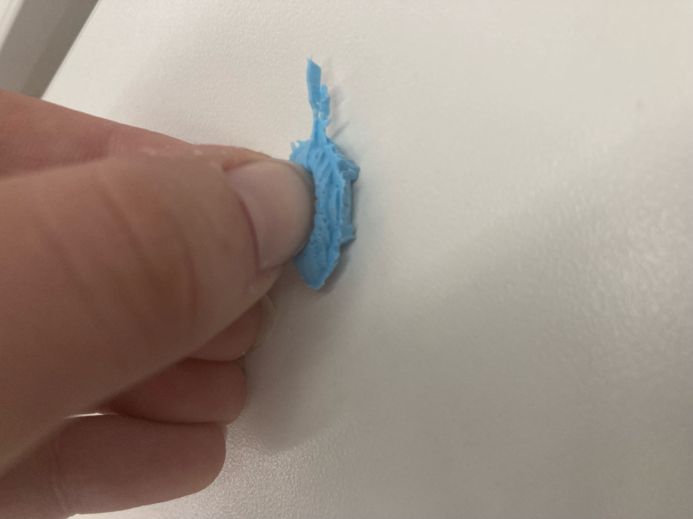

<br>
#### Week 8: CNC Milling, Molding, and Casting
For my CNC milling I made a little stop sign. I made it in the program in the computer, I made little tabs on it to cut it out. It is about 13cm wide and an octagon with the word "STOP" engraved in it. The program has a menu to add letters to your project and I sized them so they would fit into the octagon with about a centimeter of space on either side of the "S" and "P".
<img src="./Stopsign.JPEG" alt="Stop Sign" width="250" height="300">
I wanted to mold and cast a tadppole, I am working on a film project right now for class and I will hopefully have little rubber tadpoles I can use as props next semester, so I thought I might start trying to make some now!
This was my original design, I was super excited about this week, so I actually made it before we learned about how the machines actually work.
<img src="./Combiningmoldbox.PNG" alt="Original Design" width="250" height="300">
Once I had class, I made a different design in fusion, it still didn't look super like a tadpole, but I used some of the "mesh" and "create form" features that I had not used for previous projects, based around a head and body I had sketched and extruded the way I had for the projects up until now. Once I had the form, I created a new body that was a little box that joined with and cut the main body of the tadpole in 2. Then I exported it to PrusaSlicer, hid different layers, and did the same with the other half of the body. I reoriented them in the slicer. Because I was cutting the body in half, and ignoring the legs, one side of the mold is much deeper than the other.
<img src="./tadpolebottom.PNG" alt="Tadpole Bottom" width="250" height="300">
<img src="./tadpoletop.PNG" alt="Tadpole Top" width="250" height="300">
I attempted to add little half-sphere alternating divots and holes for the molds to snap into place. Mine were too small to show up well, which was good because I put them in the wrong order, so that divot matched up with divot instead of sphere matching up with divot. This ended up not being a super effective strategy for other people, so I did not think it was worth it to redesign my mold.
I sized the design down in the software on the ShopBot comupter to be 2.5 cm long.
Unfotunately, I did not notice the tail poking out the end of my design would A) not be large enough to pour into and B) would mess with the way the machine read how long my design was and make these very messy cuts at the edge of my mold. The mold was still useable, it was just harder to pull the silicone out of it. Some of the definition I had added to the tail did not show up after i milled it, but I was okay with that, there would still be a tail but it wasn't as detailed.
<img src="./Boxandtail.PNG" alt="Box Export" width="250" height="300">
<img src="./Firsttadpolemold.PNG" alt="Messy Mold" width="250" height="300">
I set the silicone negative in each half of the wax. When that dried, I sprayed each half and molded more silicone into it. My original plan was to put both halves of the mold together and use the tail as a place to pour the silicone into the whole 3D mold at once. The tail-hole was too small even when I used a syringe. Instead I filled both and imidiately flipped the two halves of the mold on top of each other, making sure the holes where the tail was lined up. After I took the first mold out I decided to make another one, so I put more silicone into the now-empty wax, which I used later.
When I pulled the final product out of the molds, there was a lot of silicone that spilled out, I could rip it off, and it looked okay. The feet had big bubbles on the bottom, so they did not mold well. And if you squished the body of the tadpole lightly, you could see that there was a huge airbubble in the body of the tadpole.
<img src="./Firsttadpole.PNG" alt="First Tadpole" width="250" height="300">

I tried again using both the original silicone molds, and the new ones. I really pressed the silicone down into the feet as much as I could, and I waited until the fresh sillicone was solidifying but still tacky before putting the halves of the molds together.
These tadpoles had solid bodies and smaller bubbles in the feet!
<img src="./Widelasttadpoles.JPEG" alt="First Tadpole" width="250" height="300">
<img src="./closeuplasttadpoles.JPEG" alt="First Tadpole is Squishy" width="250" height="300">